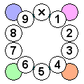

The number selector makes it quick and easy to enter "big" numbers, or to toggle pencil-marks.To enter a big number, left-click on the cell so the number selector is shown. Left-click on a number on the selector and it will be entered into the cell, or click the X at the top to delete any number already in the cell. If the colours are shown (they can be turned off from the options dialog), you can also click on a colour to apply that colour to the cell.
To toggle a pencil mark, right-click on the cell to show the number selector as before, then left click the selector to toggle that pencil mark.
Advanced usage:
If you prefer to use a pop-up menu for number entry, the you can enable that choice from the options dialog.